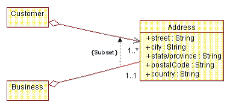
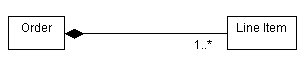
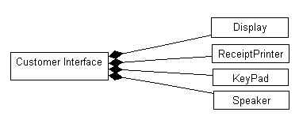
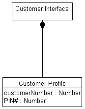
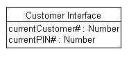
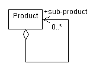

| Рекомендация: Агрегирование |
 |
|
| Связанные элементы |
|---|
АгрегированиеАгрегирование служит для моделирования составной взаимосвязи между элементами модели. Существует множество примеров составных взаимосвязей: Библиотека содержит Книги, Отделы компании состоят из Сотрудников, Компьютер состоит из набора Устройств. Для моделирования этого создается агрегационная ассоциация между агрегатом (Отдел) и его составными частями (Сотрудник). Для обозначения агрегирования к концу пути ассоциации на боковой стороне агрегата (целого) прикрепляется незакрашенный ромбик. Пример В этом примере у Клиента есть Адрес. Так как два класса представляют часть более крупного целого, применяется агрегирование. Адрес моделируется как отдельный класс, поскольку у многих других объектов также есть адреса.
Объект агрегата может объединять другие объекты. Общее агрегированиеЕсли для агрегата установлена агрегационная взаимосвязь с множественностью выше единицы, то такая взаимосвязь называется общей. Уничтожение агрегата не обязательно вызывает уничтожение его частей. Подразумевается, что общее агрегирование образует граф, т.е. дерево с несколькими корнями. Общие агрегирования применяются в случаях, когда между двумя классами существует сильная взаимосвязь, так что один и тот же экземпляр может участвовать в двух различных агрегированиях. Пример Рассмотрим случай, когда пользователь занимается бизнесом на дому. И у Пользователя, и у Бизнеса есть адрес; на самом деле, это один и тот же адрес. Адрес является составной частью и Пользователя, и Бизнеса. Однако Бизнес может прекратить свое существование; в этом случае адрес Пользователя, будем надеяться, не изменится. Заметьте, что в этом случае можно начинать и с общего агрегирования, а впоследствии преобразовать его в необщую. Домашний бизнес может расти и процветать и в какой-то момент разделиться на несколько областей. С этого момента адреса Пользователя и Бизнеса перестанут совпадать. В результате этого агрегирование перестанет быть общим.  Пример общего агрегирования. КомпозицияКомпозиция - это форма агрегирования с сильным владением и одинаковыми сроками жизни части и агрегата. Множественность конца агрегата (в примере - Заказ) не может превышать единицы (т.е. агрегирование не может быть общим). Агрегирование также неизменяемо, т.е. его ссылки нельзя изменить после их установления. Подразумевается, что составное агрегирование образует "дерево" частей, в котором корень - это агрегат, а "ветви" - части. Составное агрегирование следует применять вместо "простого", когда между агрегатом и его частями существует сильная взаимозависимость, т.е. определение агрегата неполно без частей. В представленном ниже примере иметь Заказ целесообразно, даже если ничего не заказывается (например, Товары). В некоторых случаях эту взаимозависимость можно определить на стадии анализа (как в этом примере), но чаще такие решения могут быть приняты конфиденциально не ранее чем на стадии проектирования. Для обозначения композиции к концу пути ассоциации прикрепляется закрашенный ромбик, как показано ниже:  Пример составного агрегирования. Пример В этом примере Интерфейс клиента состоит из нескольких других классов. Множественности агрегирований пока не заданы.  Объекту Интерфейс клиента известно, какие объекты Дисплей, Принтер для печати расписок, Клавиатура и Динамик ему принадлежат. Применение композиции для моделирования свойств классаСвойство класса - это то, о чем известно классу. Как в случае показанного выше класса Клиент, можно выбрать моделирование Адреса Клиента как класса, как это было показано, или как набора атрибутов класса. Выбор между классом и агрегационным отношением, или набором атрибутом, зависит от ответов на следующие вопросы:
Пример В Банкомате система должна отслеживать текущего клиента и его PIN. Предположим, что за это отвечает Интерфейс клиента. Эту информацию можно рассматривать как "свойства" класса. Это можно сделать с помощью отдельного класса, как показано ниже:  Свойства объекта, моделируемые с помощью агрегирования Альтернативный вариант, когда Интерфейс заказчика отслеживает текущего клиента и его PIN с помощью атрибутов, моделируется так:  Свойства объекта, моделируемые с помощью атрибутов Решение о том, что следует применять: атрибуты или агрегационную ассоциацию с отдельным классом, принимается в зависимости от того, насколько тесно связаны представленные концепции. Если моделируемые концепции тесно связаны, применяйте атрибуты. Если концепции, по-видимому, изменяются независимо, применяйте агрегирование. Агрегирование или ассоциация?Агрегирование следует применять только тогда, когда между классами есть составная взаимосвязь, когда один класс состоит из остальных классов, когда "части" неполны вне контекста целого. Рассмотрим случай Заказа: нет никакого смысла иметь заказ, который "пуст" и состоит из "ничего". То же самое справедливо для всех агрегатов: в отделах должны быть сотрудники, в семьях - члены семей, и т.д. Если у классов может быть независимая идентификация вне контекста других классов, если они не являются частью некоего большего целого, то следует применять ассоциативную взаимосвязь. Кроме того, ассоциацию следует применять в случае сомнений; агрегирования, вообще говоря, очевидны, и выбирают их только с целью упростить дело. Это не критический фактор для достижения успеха при моделировании. Циклические агрегированияИногда класс может быть агрегирован с самим собой. Это не означает, что экземпляр класса состоит из самого себя (это было бы глупо); это означает, что один из экземпляров класса является агрегатом, составленным из других экземпляров того же класса. В случае циклических агрегирований имена ролей существенны для различения цели ассоциации. Пример Рассмотрим следующее циклическое агрегирование с участием класса Продукт:  В этом случае продукт может состоять из других продуктов; если это так, то последние называются субпродуктами. В ассоциации можно перемещаться только от агрегата к субпродукту; иными словами, субпродуктам "неизвестно", в состав каких продуктов они входят (поскольку они могут входить в состав многих продуктов). |

© Copyright IBM Corp. 1987, 2006. Все права защищены.. |